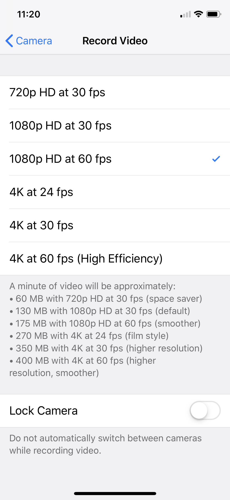
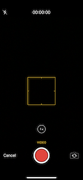

Mideo
Mideo - Record with Music, made by a weightlifter, is the Top-10 Video App that doesn't pause your music. Email me (see below) if you encounter any issues not in the FAQ.
The ESSENTIAL Frequently Asked Questions
-
Why is my music still pausing?
- Make sure you have the music already playing before you start to record. Also, some users may need to set the Default Orientation to front/back instead of flipping the camera while recording.
-
My music is STILL pausing. I am using some music app that isn't the typical Apple Music/Spotify.
- After starting to record, when the music pauses; hit the Resume button on your device or headphones (easiest way to do this: Control Center. See the next FAQ.) .
-
How can I change or resume the music without leaving the app?
- Use the iOS "Control Center":
- On an iPhone X or later, swipe down from the top-right corner of your screen.
- On an iPhone 8 or earlier, or iPod touch, swipe up from the bottom edge of any screen.

-
How can I record the music playing?
- Play music to a speaker (not headphones), and Mideo will be include the music in your video.
- Music playing in your headphones:
- iPhones will not let any apps do this for privacy reasons. Think about it - if my app could listen in on the music playing from another app, I could also eavesdrop on ANY background audio or conversation! For this reason, Apple does not allow it.
- The purpose of this app is to record videos without pausing the music - for example, I am a weightlifter, and I like to record my lifts while also listening to my favorite music.
- If you downloaded this app thinking it had a different purpose, look at the Refunds section.
-
My video failed to save or is silent. What's going on?
- Make sure you're not leaving the app when it's saving a long video (the app will say "Trimming" or "Saving") - this even includes swiping down to view your iPhone notifications or changing your music track.
- Make sure you've allowed Mideo the permission to Read + Write to your Photos: go to the Settings app, scroll down to Mideo, and make sure the app is allowed to Read + Write.
- Make sure you have enough storage remaining on your iPhone: Mideo displays the "minutes remaining" within the app to give an estimate for how much storage you have left. You can free up storage by deleting long videos in the Photos app then making sure to delete them also from the "Recently Deleted" album.
- Have an iPad? Make sure you are using the most recent version of Mideo.
- I recommend always using the red circle to record, not the volume buttons - some older devices have different functionalities for each.
- Is it spinning forever and not saving? Restart your iPhone, that's a device error, not an app error.
- Still not working? Then it's a device error, not an app error. Restart your device, and consider updating your iOS. If it still doesn't save, then you're one of the unlucky 0.01% of incompatible users - see the Refunds section at the bottom.
- Email me (iam@willsaid.com) if you figure out what ended up fixing the issue for you, or if you can't figure it out!
Other Frequently Asked Questions
-
I get an error message when recording (Either "No Internet Connection" or "Error Code 2")
- Update to the newest version of Mideo.
-
My videos aren't saving - the loading wheel spins forever.
- Restart your iPhone. This is a device error, not an app error.
-
What does "Storage: At least 12 hours of video" mean?
- This tells you how much remaining storage is on your device, and what that means in terms of video length (rather than bytes).
-
What microphone is being used?
- By default, Mideo uses your device's built-in mic. If you wear bluetooth headphones like AirPods, i still default to your device. If you have an external mic (drummer perhaps?) and want to use that instead, select the "Inputs" row in Mideo.
-
Why does my music pause after switching orientations twice?
- There's no need to switch that many times, just change the default orientation.
-
What are "High", "Medium", and "Low" video resolutions? Can you be more exact?
- Apple gives me the high/medium/low as options to correspond to the resolutions that can be found in your iPhone’s Settings > Camera > Record Video. The “high” given by Apple corresponds to the highest available resolution, etc. This is what it’s like on an iPhone X:
- 
-
How can I clear the app cache? I record very long videos on the dashboard of my car, and almost never save them. My device settings shows your app is holding onto a lot of space, what should I do?
- Take a video (of any length) and save it (click "Use Video"). That will clear the cache and reduce the app size.
-
Why is the app frozen? I'm just trying to click Start Recording on the home page, but it is frozen.
- Repeatedly tap on the button until it works. This is a rare issue I am working on fixing.
-
Why isn't the Minutes of Storage Remaining increasing, even after I deleted some videos from my Photo library?
- Make sure you also permanently deleted them from your Recently Deleted album in the Photos app.
-
How can I change the input audio source microphone? For example, I am a drummer who wants to a) Listen via headphones, but also b) Record with my iPhone's mic. Currently it is using the headset mic.
-
Why are my videos silent? I'm taking videos with sound but when I open them in Photos, they are silent.
- Make sure you've enabled Mideo to record audio: go to the Settings app, scroll down to Mideo, and check the Audio permissions.
- Make sure to record with the red circle button, not the volume button.
- Else, dismiss the camera view by clicking "Cancel" whenever you leave the app. This is what that camera view looks like:
- 
Refunds
- Is Mideo not what you were looking for? I do not handle refunds, Apple does: find the receipt they emailed you and click "Report A Problem" to receive your refund.
- Please still email me the bug you encountered so I can fix it for everyone else. As always, email me for any clarifications or support.
Contact Me
- Email me at iam@willsaid.com! You can simply tap the mail icon below. I respond to everyone.
- The majority of this FAQ was discovered/written by great users who found various edge cases. Please let me know if you think there's anything I should add to this support page.